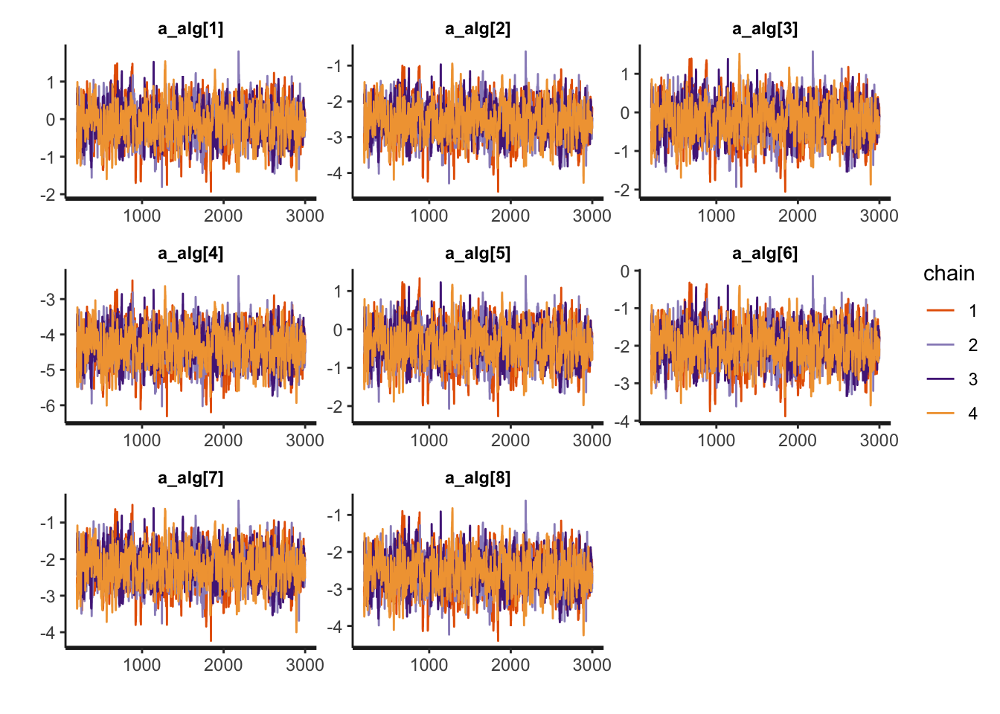
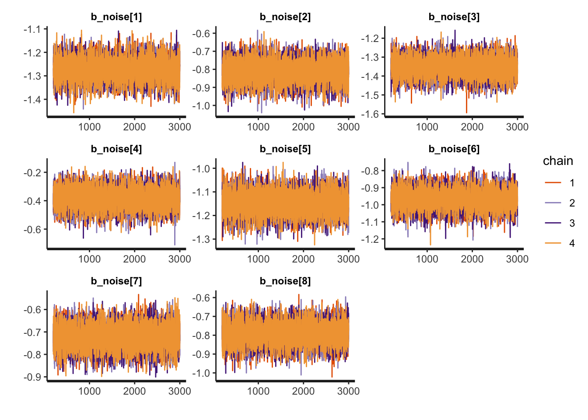
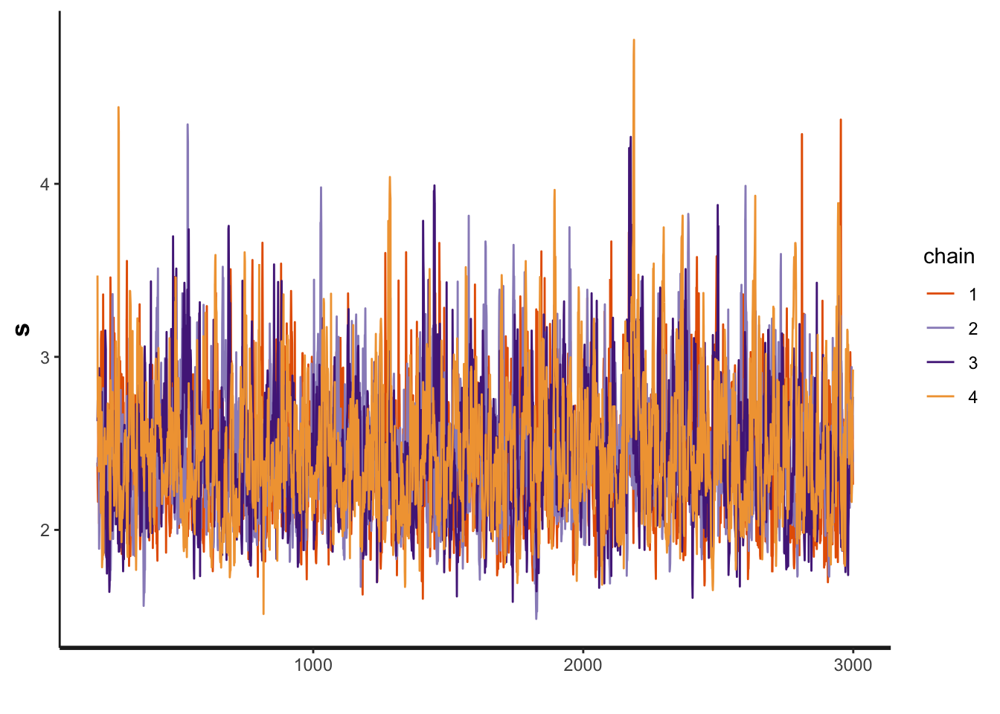
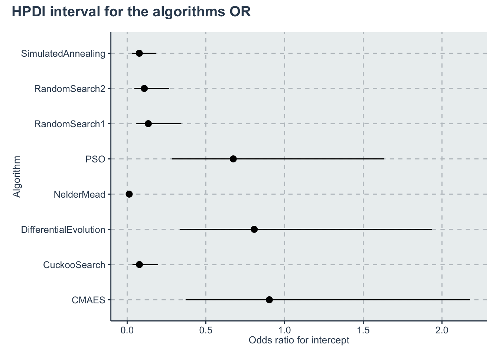
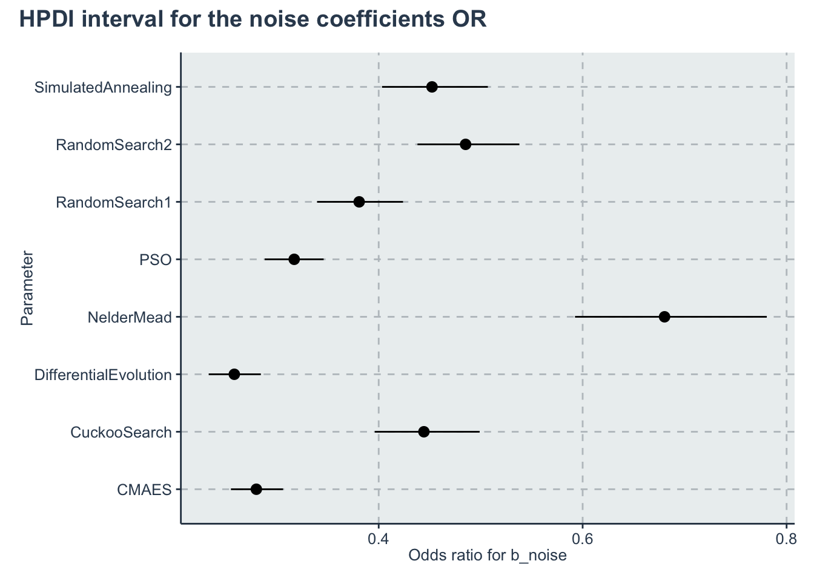
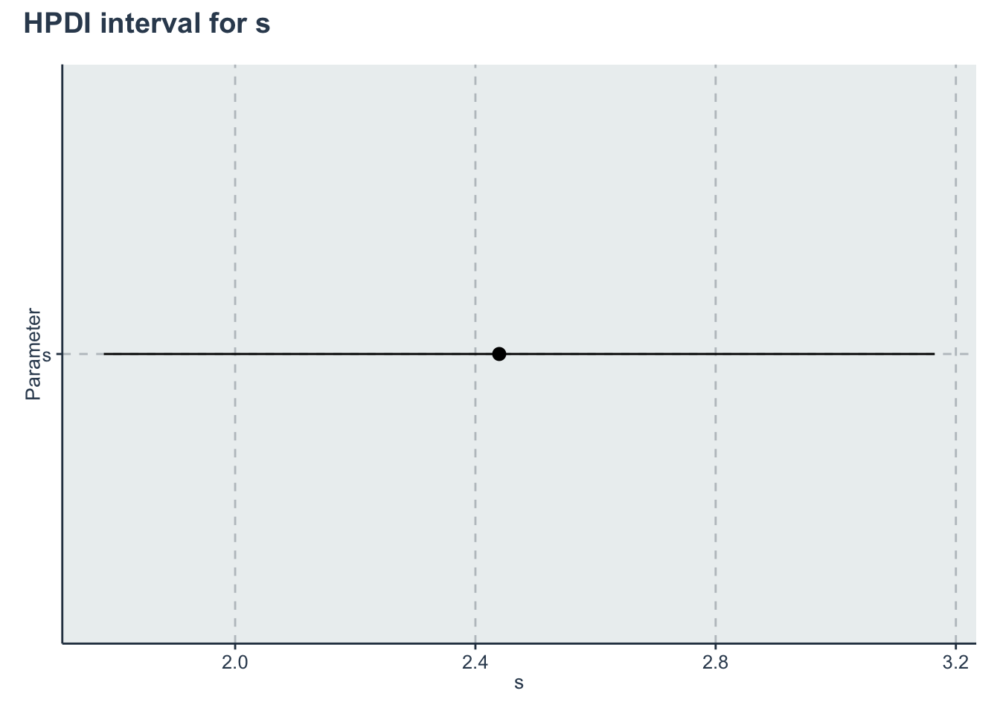

Chapter 2 Probability of success model
Our first model can be used to address problems such as:
- RQ1-a: What is the probability of each algorithm solving a problem at precision \(\epsilon \leq 0.1\)?
- RQ1-b: What is the impact of noise in the probability of success of each algorithm at precision \(\epsilon \leq 0.1\)?
2.1 RQ1 Data preparation
We start importing the dataset
dataset <- readr::read_csv('./data/statscomp.csv')Let’s select only the columns that interests us. Note we use "" to select some of the columns because they have “-” in the column name
dataset<-dplyr::select(dataset, Algorithm, CostFunction, SD, MaxFevalPerDimensions, simNumber, SolveAt1, "SolveAt1e-1","SolveAt1e-3","SolveAt1e-6", OptimizationSuccessful)Let’s do some basic transformation
1 - We select only the cases where the optimization completed
2 - We convert True to 1 and 0 to false
3 - We group by the algorithms, functions, SD, and budget so we can summarize and create aggregated data
4 - We create an index of each algorithm and the cost functions. This is basically creating a map of NelderMead=1, PSO=2 etc… This makes things easier to work in Stan. For that we use the function create_index from the utils.R file
5 - We drop the columns we wont use
6 - Get an array with the names of the benchmark functions and the algorithms (to create nicer plots later with lengend)
Since we are only looking at 1e-1 for the precision we comment the other lines
d <- dataset %>%
dplyr::filter(OptimizationSuccessful==TRUE) %>%
dplyr::mutate(
solvedAt1e1=as.integer(dataset$"SolveAt1e-1"),
budget=MaxFevalPerDimensions) %>%
dplyr::group_by(Algorithm, CostFunction, SD, budget) %>%
dplyr::summarize(
solvedAt1e1=sum(solvedAt1e1),
N=n()) %>%
dplyr::ungroup() %>%
dplyr::mutate(AlgorithmID=create_index(Algorithm),
CostFunctionID=create_index(CostFunction)) %>%
dplyr::select(Algorithm,AlgorithmID, CostFunction, CostFunctionID, SD, budget, N,
y=solvedAt1e1,
)
#List of algorithms
bm <- get_index_names_as_array(d$CostFunction)
algorithms <- get_index_names_as_array(d$Algorithm)Lets preview a sample of the data set
kable(dplyr::sample_n(d,size=10),"html", booktabs=T, format.args = list(scientific = FALSE), digits = 3) %>%
kable_styling(bootstrap_options = c("striped", "hover", "condensed")) %>%
kableExtra::scroll_box(width = "100%")| Algorithm | AlgorithmID | CostFunction | CostFunctionID | SD | budget | N | y |
|---|---|---|---|---|---|---|---|
| RandomSearch2 | 7 | ChenV | 3 | 3 | 20 | 10 | 0 |
| PSO | 5 | WhitleyN6 | 28 | 0 | 20 | 10 | 0 |
| SimulatedAnnealing | 8 | Schwefel2d26N6 | 19 | 3 | 100000 | 10 | 0 |
| NelderMead | 4 | LunacekBiRastriginN6 | 9 | 3 | 1000 | 10 | 0 |
| PSO | 5 | StrechedVSineWave2N | 23 | 3 | 10000 | 10 | 0 |
| PSO | 5 | Schwefel2d21N6 | 17 | 3 | 100 | 10 | 0 |
| CuckooSearch | 2 | ZakharovN2 | 30 | 3 | 1000 | 10 | 0 |
| DifferentialEvolution | 3 | StrechedVSineWave2N | 23 | 0 | 10000 | 10 | 10 |
| DifferentialEvolution | 3 | Schwefel2d21N6 | 17 | 0 | 100000 | 10 | 10 |
| CMAES | 1 | Giunta | 8 | 3 | 1000 | 10 | 1 |
2.2 RQ1 Stan model
The Stan model is specified in the file: './stanmodels/probsuccess.stan'. Note that at the end of the model we commented the generated quantities. This block generates the predictive posterior y_rep and the log likelihood, log_lik. These values are useful in diagnosing and validating the model but the end file is extremely large (~1Gb for 2000 iterations) and make many of the following calculations slow. If the reader wants to see these values is just to uncomment and run the stan model again
print_stan_code('./stanmodels/probsuccess.stan')// Probability of success model
// Author: David Issa Mattos
// Date: 16 June 2020
//
//
data {
int <lower=1> N_total; // Sample size
int y[N_total]; // Result of the binomial
int N_draw[N_total]; // Number of draws in the binomial
real x_noise[N_total];//predictor for noise
//To model each algorithm independently
int <lower=1> N_algorithm; // Number of algorithms
int algorithm_id[N_total]; //vector that has the id of each algorithm
//To model the influence of each benchmark
int <lower=1> N_bm;
int bm_id[N_total];
}
parameters {
//Fixed effect
real a_alg[N_algorithm];//the mean effect given by the algorithms
real b_noise[N_algorithm];//slope for the noise
// //Random effect. The effect of the benchmarks
real a_bm_norm[N_bm];//the mean effect given by the base class type
real<lower=0> s;//std for the random effects
}
model {
real p[N_total];
//Fixed effect
a_alg ~ normal(0,5);
b_noise ~ normal(0,5);
// //Random effects
s ~ exponential(0.1);
a_bm_norm ~ normal(0,1);
for (i in 1:N_total)
{
p[i] = a_alg[algorithm_id[i]]+ a_bm_norm[bm_id[i]]*s + b_noise[algorithm_id[i]] * x_noise[i];
}
//Equivalent to: y~binomial(N, inverse_logit(a+bx=alpha))
y ~ binomial_logit(N_draw,p);
}
//Uncoment this part to get the posterior predictives and the log likelihood
//But note that it takes a lot of space in the final model
// generated quantities{
// vector [N_total] y_rep;
// vector[N_total] log_lik;
//
// for(i in 1:N_total){
// real p;
// p = a_alg[algorithm_id[i]]+ a_bm_norm[bm_id[i]]*s + b_noise[algorithm_id[i]] * x_noise[i];
//
// y_rep[i] = binomial_rng(N_draw[i], inv_logit(p));
//
// //Log likelihood
// log_lik[i] = binomial_lpmf(y[i] | N_draw[i], inv_logit(p));
// }
// }Let’s compile and start sampling with the Stan function. In the data folder you can find the specific data used to fit the model after all transformations "./data/probsuccsess-data.RDS"
standata <- list(
N_total = nrow(d),
y = d$y,
N_draw = d$N,
x_noise = d$SD,
N_algorithm = length(algorithms),
algorithm_id =d$AlgorithmID,
N_bm = length(bm),
bm_id = d$CostFunctionID)
saveRDS(standata, file = "./data/probsuccsess-data.RDS")For computation time sake we are not running this chunk every time we compile this document. From now on we will load from the saved Stan fit object in the data folder. However, when we change our model or the data we can just run this chunk separately.
standata<-readRDS("./data/probsuccsess-data.RDS")
probsuccess.fit <- stan(file = './stanmodels/probsuccess.stan',
data=standata,
chains = 4,
warmup = 200,
iter = 3000)
saveRDS(probsuccess.fit, file = "./data/probsuccsess-fit.RDS")2.3 RQ1 Diagnosis
2.3.1 RQ1 Chains convergence
The first step is to evaluate the convergence of the chains. We will look now only for the slopes, algorithms intercept and the standard deviation of the random effects (and not each intercept of the random effects)
a_alg <- c("a_alg[1]",
"a_alg[2]",
"a_alg[3]",
"a_alg[4]",
"a_alg[5]",
"a_alg[6]",
"a_alg[7]",
"a_alg[8]")
b_noise <- c("b_noise[1]",
"b_noise[2]",
"b_noise[3]",
"b_noise[4]",
"b_noise[5]",
"b_noise[6]",
"b_noise[7]",
"b_noise[8]")
rstan::traceplot(probsuccess.fit, pars=a_alg)
rstan::traceplot(probsuccess.fit, pars=b_noise)
rstan::traceplot(probsuccess.fit, pars=c('s'))
Another diagnosis is to look at the Rhat. If Rhat is greater than 1.05 it indicates a divergence in the chains (they did not mix well). The table below shows a summary of the sampling.
kable(summary(probsuccess.fit)$summary) %>%
kable_styling(bootstrap_options = c('striped',"hover", "condensed" )) %>%
kableExtra::scroll_box(width = "100%")| mean | se_mean | sd | 2.5% | 25% | 50% | 75% | 97.5% | n_eff | Rhat | |
|---|---|---|---|---|---|---|---|---|---|---|
| a_alg[1] | -0.1016770 | 0.0141859 | 0.4511590 | -0.9986581 | -0.3944800 | -0.1079857 | 0.1956272 | 0.7748758 | 1011.456 | 1.0007354 |
| a_alg[2] | -2.5516066 | 0.0142459 | 0.4563417 | -3.4560617 | -2.8523292 | -2.5527132 | -2.2471997 | -1.6730424 | 1026.124 | 1.0009415 |
| a_alg[3] | -0.2139745 | 0.0142481 | 0.4513760 | -1.1136926 | -0.5092907 | -0.2159365 | 0.0889257 | 0.6489137 | 1003.611 | 1.0007939 |
| a_alg[4] | -4.3498335 | 0.0142878 | 0.4667423 | -5.2926288 | -4.6576410 | -4.3486295 | -4.0362012 | -3.4514857 | 1067.149 | 1.0007534 |
| a_alg[5] | -0.3943603 | 0.0142332 | 0.4506022 | -1.2874160 | -0.6869869 | -0.3994464 | -0.0884889 | 0.4724644 | 1002.264 | 1.0009414 |
| a_alg[6] | -2.0070362 | 0.0142076 | 0.4539332 | -2.9122092 | -2.3013030 | -2.0129352 | -1.7030975 | -1.1352872 | 1020.806 | 1.0008781 |
| a_alg[7] | -2.2163631 | 0.0142042 | 0.4537016 | -3.1183583 | -2.5133972 | -2.2204326 | -1.9159819 | -1.3441906 | 1020.248 | 1.0009555 |
| a_alg[8] | -2.5625822 | 0.0142418 | 0.4562100 | -3.4753740 | -2.8617582 | -2.5668217 | -2.2559160 | -1.6908949 | 1026.123 | 1.0008100 |
| b_noise[1] | -1.2728595 | 0.0004634 | 0.0464911 | -1.3649835 | -1.3042495 | -1.2727833 | -1.2419386 | -1.1808717 | 10064.607 | 1.0003304 |
| b_noise[2] | -0.8111614 | 0.0005341 | 0.0594260 | -0.9269817 | -0.8512298 | -0.8108461 | -0.7706404 | -0.6960778 | 12378.857 | 0.9998278 |
| b_noise[3] | -1.3531582 | 0.0004555 | 0.0498441 | -1.4530193 | -1.3862144 | -1.3528896 | -1.3200088 | -1.2545062 | 11973.466 | 1.0003042 |
| b_noise[4] | -0.3851807 | 0.0006594 | 0.0708802 | -0.5254143 | -0.4334606 | -0.3844210 | -0.3357693 | -0.2486244 | 11553.895 | 0.9998575 |
| b_noise[5] | -1.1483855 | 0.0004288 | 0.0471090 | -1.2413071 | -1.1803177 | -1.1475632 | -1.1166922 | -1.0569722 | 12068.645 | 0.9999617 |
| b_noise[6] | -0.9653479 | 0.0005154 | 0.0567297 | -1.0794613 | -1.0029451 | -0.9644473 | -0.9267742 | -0.8573317 | 12113.240 | 0.9999536 |
| b_noise[7] | -0.7231598 | 0.0005147 | 0.0521852 | -0.8278536 | -0.7579466 | -0.7223159 | -0.6875584 | -0.6217345 | 10280.685 | 0.9998671 |
| b_noise[8] | -0.7934309 | 0.0006002 | 0.0579600 | -0.9074668 | -0.8320577 | -0.7937229 | -0.7548121 | -0.6780034 | 9326.707 | 1.0000572 |
| a_bm_norm[1] | -0.5515980 | 0.0059809 | 0.2113896 | -0.9712815 | -0.6922152 | -0.5481803 | -0.4065674 | -0.1432695 | 1249.219 | 1.0005773 |
| a_bm_norm[2] | -1.3857790 | 0.0072688 | 0.3110012 | -2.0315335 | -1.5876596 | -1.3696647 | -1.1724448 | -0.8177882 | 1830.642 | 1.0004815 |
| a_bm_norm[3] | -0.6135924 | 0.0059932 | 0.2138498 | -1.0370821 | -0.7578332 | -0.6099309 | -0.4669450 | -0.1978411 | 1273.226 | 1.0007982 |
| a_bm_norm[4] | 0.6996375 | 0.0065183 | 0.2143535 | 0.2882285 | 0.5533039 | 0.6956576 | 0.8438217 | 1.1273589 | 1081.413 | 1.0011373 |
| a_bm_norm[5] | -0.9190532 | 0.0063871 | 0.2451850 | -1.4221268 | -1.0826093 | -0.9142283 | -0.7500079 | -0.4543208 | 1473.602 | 1.0004336 |
| a_bm_norm[6] | -0.1266989 | 0.0057661 | 0.1905645 | -0.5002489 | -0.2576990 | -0.1251113 | 0.0010672 | 0.2486333 | 1092.226 | 1.0005111 |
| a_bm_norm[7] | 2.0929329 | 0.0098459 | 0.3562187 | 1.4022113 | 1.8483216 | 2.0869635 | 2.3308668 | 2.8104401 | 1308.946 | 1.0019514 |
| a_bm_norm[8] | 1.4163381 | 0.0079819 | 0.2778883 | 0.8720145 | 1.2260972 | 1.4104389 | 1.6037712 | 1.9676857 | 1212.061 | 1.0016224 |
| a_bm_norm[9] | -2.2875170 | 0.0080868 | 0.5070058 | -3.3784938 | -2.6042096 | -2.2496205 | -1.9305845 | -1.4020841 | 3930.757 | 1.0003584 |
| a_bm_norm[10] | 0.0376740 | 0.0057984 | 0.1890303 | -0.3267560 | -0.0909227 | 0.0381280 | 0.1632858 | 0.4111242 | 1062.770 | 1.0008355 |
| a_bm_norm[11] | -0.4683589 | 0.0058892 | 0.2054966 | -0.8814239 | -0.6047223 | -0.4628744 | -0.3299558 | -0.0697175 | 1217.572 | 1.0004397 |
| a_bm_norm[12] | 0.9705429 | 0.0072309 | 0.2352270 | 0.5211149 | 0.8117004 | 0.9658386 | 1.1296289 | 1.4391891 | 1058.256 | 1.0014069 |
| a_bm_norm[13] | 0.1111258 | 0.0058348 | 0.1895685 | -0.2518913 | -0.0206515 | 0.1106819 | 0.2360902 | 0.4897085 | 1055.563 | 1.0006293 |
| a_bm_norm[14] | -0.4185043 | 0.0058612 | 0.2020018 | -0.8150537 | -0.5543865 | -0.4170919 | -0.2820809 | -0.0200522 | 1187.764 | 1.0004502 |
| a_bm_norm[15] | -0.2120039 | 0.0057779 | 0.1931704 | -0.5875451 | -0.3435861 | -0.2108279 | -0.0835340 | 0.1704687 | 1117.724 | 1.0004975 |
| a_bm_norm[16] | 0.0582553 | 0.0057948 | 0.1899707 | -0.3051919 | -0.0713240 | 0.0577533 | 0.1855058 | 0.4365644 | 1074.708 | 1.0007318 |
| a_bm_norm[17] | -0.0945615 | 0.0058098 | 0.1905650 | -0.4616333 | -0.2244295 | -0.0938981 | 0.0338356 | 0.2816415 | 1075.888 | 1.0006509 |
| a_bm_norm[18] | 0.3553886 | 0.0060492 | 0.1962915 | -0.0150112 | 0.2217934 | 0.3541406 | 0.4875904 | 0.7474879 | 1052.943 | 1.0007216 |
| a_bm_norm[19] | -1.3873544 | 0.0071574 | 0.3144653 | -2.0341171 | -1.5904221 | -1.3696656 | -1.1671590 | -0.8205984 | 1930.342 | 1.0006691 |
| a_bm_norm[20] | -0.2103035 | 0.0057874 | 0.1925856 | -0.5825628 | -0.3399080 | -0.2079499 | -0.0814456 | 0.1685257 | 1107.335 | 1.0007190 |
| a_bm_norm[21] | 0.0374586 | 0.0057911 | 0.1888960 | -0.3244013 | -0.0918735 | 0.0378206 | 0.1633785 | 0.4096106 | 1063.953 | 1.0007178 |
| a_bm_norm[22] | 0.4262087 | 0.0061486 | 0.1989057 | 0.0477541 | 0.2899258 | 0.4231280 | 0.5578995 | 0.8254036 | 1046.516 | 1.0011291 |
| a_bm_norm[23] | -0.2208615 | 0.0057839 | 0.1927261 | -0.5929206 | -0.3516246 | -0.2213745 | -0.0911591 | 0.1589538 | 1110.306 | 1.0006586 |
| a_bm_norm[24] | 0.9181966 | 0.0069786 | 0.2314096 | 0.4725721 | 0.7597149 | 0.9153235 | 1.0732483 | 1.3825348 | 1099.586 | 1.0014348 |
| a_bm_norm[25] | -0.4800747 | 0.0058778 | 0.2060577 | -0.8903264 | -0.6193752 | -0.4793265 | -0.3426119 | -0.0764864 | 1228.989 | 1.0007175 |
| a_bm_norm[26] | 1.8127547 | 0.0090502 | 0.3223532 | 1.1907146 | 1.5925470 | 1.8072705 | 2.0297038 | 2.4651831 | 1268.663 | 1.0017888 |
| a_bm_norm[27] | -0.3950165 | 0.0058627 | 0.2010451 | -0.7896719 | -0.5304012 | -0.3915179 | -0.2564086 | -0.0006536 | 1175.971 | 1.0004427 |
| a_bm_norm[28] | -1.5823227 | 0.0078727 | 0.3510577 | -2.3267529 | -1.8102101 | -1.5614566 | -1.3363711 | -0.9473444 | 1988.408 | 1.0008761 |
| a_bm_norm[29] | 0.4734666 | 0.0062045 | 0.2008774 | 0.0930725 | 0.3343172 | 0.4734256 | 0.6092113 | 0.8729607 | 1048.224 | 1.0011553 |
| a_bm_norm[30] | 0.7791124 | 0.0067026 | 0.2195527 | 0.3600034 | 0.6284312 | 0.7741367 | 0.9296758 | 1.2156303 | 1072.990 | 1.0013464 |
| s | 2.4396697 | 0.0091963 | 0.3666749 | 1.8524855 | 2.1797734 | 2.3975453 | 2.6487166 | 3.2807386 | 1589.761 | 1.0026073 |
| lp__ | -5600.1110570 | 0.1389985 | 6.2045095 | -5613.2707018 | -5604.0278224 | -5599.7723066 | -5595.7819986 | -5588.9259626 | 1992.483 | 1.0021429 |
2.4 RQ1 Results and Plots
First lets get the HPDI of every parameter. We do this with the helper function from utils.R. But the function is quite simple. It just converts the stanmodel object to an object that the coda package can read (and do some renaming). Alternatively we can use the HDInterval package.
Then we restrict to the algorithms, them to the slopes, then to the other parameters. We create different data frames that we use to plot with ggplot pointrange
hpdi <- get_HPDI_from_stanfit(probsuccess.fit)
hpdi_oddsratio <- hpdi
hpdi_oddsratio$Mean <- exp(hpdi$Mean)
hpdi_oddsratio$HPDI.lower <- exp(hpdi$HPDI.lower)
hpdi_oddsratio$HPDI.higher <- exp(hpdi$HPDI.higher)
hpdi_oddsratio_algorithm <- hpdi_oddsratio %>%
dplyr::filter(str_detect(Parameter, "a_alg\\[")) %>%
dplyr::mutate(Parameter=algorithms) #Changing to the algorithms labels
hpdi_oddsratio_b_noise <- hpdi_oddsratio %>%
dplyr::filter(str_detect(Parameter, "b_noise\\[")) %>%
dplyr::mutate(Parameter=algorithms) #Changing to the algorithms labels
hpdi_s <- hpdi %>%
dplyr::filter(Parameter=='s')
p_alg<-ggplot(data=hpdi_oddsratio_algorithm, aes(x=Parameter))+
geom_pointrange(aes(
ymin=HPDI.lower,
ymax=HPDI.higher,
y=Mean))+
labs(y="Odds ratio for intercept", x="Algorithm")+
coord_flip()
p_alg + plot_annotation(title = 'HPDI interval for the algorithms OR')
p_noise <- ggplot(data=hpdi_oddsratio_b_noise, aes(x=Parameter))+
geom_pointrange(aes(
ymin=HPDI.lower,
ymax=HPDI.higher,
y=Mean))+
labs( y="Odds ratio for b_noise", x="Parameter")+
coord_flip()+
theme()
p_noise + plot_annotation(title = 'HPDI interval for the noise coefficients OR')
p_s <- ggplot(data=hpdi_s, aes(x=Parameter))+
geom_pointrange(aes(
ymin=HPDI.lower,
ymax=HPDI.higher,
y=Mean))+
labs(y="s", x="Parameter")+
coord_flip()
p_s + plot_annotation(title = 'HPDI interval for s')
Creating an output table
algreduced <- c("CMAES", "Cuckoo", "DiffEvol.", "NelderM.", "PSO", "RandomS1","RandomS2", "SimAnneal")
rename_pars <- c(
paste(rep('a_',length(algorithms)),algreduced, sep = ""),
paste(rep('b_',length(algorithms)),algreduced, sep = ""),
's')
t<-create_table_model(probsuccess.fit, pars = c(a_alg, b_noise, 's'), renamepars = rename_pars)
t<- t %>%
mutate('OR Mean' = exp(Mean),
'OR HPD low' = exp(HPDI.lower),
'OR HPD high' = exp(HPDI.higher))
colnames(t)<-c("Parameter", "Mean", "HPD low", "HPD high",'OR Mean','OR HPD low','OR HPD high')
saveRDS(t,'./statscomp-paper/tables/datafortables/probsuccess-par-table.RDS')